- Document
- Paris, BnF, ms. français 4698 (Gallica
btv1b9058291p, microfilm): letters in Italian from Cardinal Scipione Gonzaga in Rome to Louis de Gonzague, Duke of Nevers, with long passages in cipher. Here: the letters of 21 January 1590 (ff. 30r-31r) and of 24 March 1590 (ff. 26v-27r). - New
- The reconstruction of the cipher, built without a key sheet: three layers, a word code of 448 values in 14 lists, a symbol alphabet. The link between fr. 4698 and the period decipherments in fr. 4702. A test of the rebuilt code on a second volume, fr. 4696. The letters of 24 March and 31 March 1590, which have no period decipherment, read with gaps.
- Reproduced
- The plain text of the letters of 21 January and 16 February 1590. It is the text of Nevers's own clerk of 1590 (BnF fr. 4702). We transcribed and translated it. It is not a new decipherment.
The key
1. A word code. A two-digit figure, 10 to 99, stands for one word in its dictionary form. A mark on the figure says which list the figure belongs to. Each list is a slice of one alphabetical word list; u and v count as one letter.
| List | Mark on the figure | Slice | Sample: figure and word | Values |
|---|---|---|---|---|
| A | plain or one dot above | a .. ca | 10 Ambasciatore, 43 ambasciatore, 72 aviso, 99 caso | 34 |
| C | one dot above | cat .. di | 12 cattivo, 36 confusione, 63 cosa, 95 disegno | 47 |
| E | two dots above | dis .. f | 16 disporre, 41 efficacia, 73 fallire, 94 forza | 26 |
| G | two dots below | g .. in | 14 gagliardo, 40 gratia, 68 il quale, 96 indegno | 23 |
| I | bar below | in .. lu | 13 inettitudine, 44 intelligenza, 74 Lega / collegato, 96 maggiore | 25 |
| M | dot below (often with a dot above) | ma .. ne | 10 male, 47 miglioramento, 75 muovere, 95 nostro | 30 |
| O | circumflex above | no .. pe | 10 novo, 25 opinione, 65 passato, 94 persona | 27 |
| P | caron below | pi .. qu | 13 piacere, 52 pretesto, 76 promettere, 99 quello | 28 |
| Q | circumflex above and caron below | qu .. r | 11 questo, 35 religione, 74 riserva, 90 ruina | 25 |
| S | dot above and bar below | s | 13 sapere, 36 seguire, 63 soldato, 91 stato | 22 |
| T | bar above and dot below | su .. v (u = v) | 10 sua, 31 terra, 73 villa, 96 zelo | 32 |
| PT | two bars | particles a .. q | 13 acciò che, 45 finché, 76 non, 99 quello | 57 |
| BR | round brackets | particles s .. v, auxiliaries, pronouns, titles | 10 quasi, 23 verso, 37 loro, 50 V.E. | 32 |
| N | bar above | persons and names (not alphabetical) | 12 Ab. (abbate ...), 37 Principe di Mantova, 64 Catolici, 99 Parigi | 29 |
The names of the lists are ours. On the microfilm lists A and C both carry a dot above most of the time; the word decides between them. Full table: tables/lists_v4.tsv (448 values, each with its period gloss). Proposals with no gloss: tables/interp_v4.tsv.
2. A symbol alphabet for words that are not in the lists. The images are cut from f. 30r, lines 1 to 3, of the letter of 21 January 1590. The names of the signs are ours.
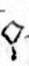
qoa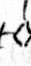
aa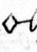
sigaa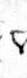
tribb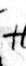
#c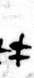
ddcc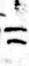
=d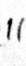
lldd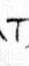
Te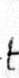
tet2e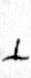
perpeexxff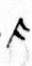
cag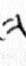
glgg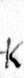
Khh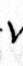
vi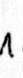
Lii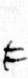
F3lF3rllpimxumm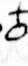
oXn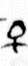
Qnn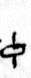
phio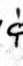
phidooho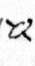
aloo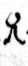
Rp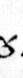
gampp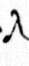
rryrr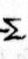
Ss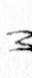
xiss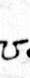
omt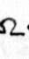
om2tt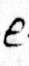
Eu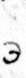
E3u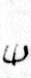
shupivuu, vIn each box: the sign, our name for it, and its letter. A box with no image: the sign is not in these three lines. Source of the sign images: BnF, ms. français 4698, f. 30r (microfilm), gallica.bnf.fr / BnF. The table of the signs is in the work log: evidence/worklog.md.
3. A verb sign. An arc above a figure means: read the verb of the noun in the list. The Cardinal states this rule in clear on f. 17v.
Worked example
21 January 1590: f. 30r, cipher line 1, with the text of the clerk of 1590
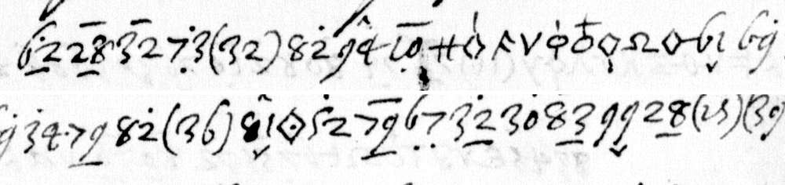
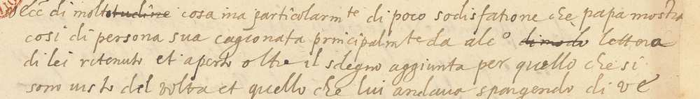
Each box holds one unit: the figure, its mark as we read it on the film and the list, the word of the rebuilt code (dictionary form), and the word that the clerk wrote in 1590. A red box: we keep another word than the clerk.
Clerk, fr. 4702 f. 94r, lines 3 to 6: V(?) Ecc. di molt[struck: itudine] cosa ma particolarm.te di poco sodisfatione che Papa mostra così di persona sua cagionata principalm.te da alc.o [struck: dimodo] lettera di lei ritenuto et aperto oltre il sdegno aggiunta per quello che si sono visto del Volta et quello che lui andava spargendo di V.E.
Edition (the clerk's text with agreement made regular): sodisfatione che Papa mostra [havere] di persona sua, cagionata principalmente da alcune lettere di lei ritenute et aperte, oltre il sdegno aggiunto per quello che si sono
the little satisfaction that the Pope shows with your person. Its main cause is some letters of yours that were held and opened; added to this is the anger at what was seen of Volta
In 7 of the 26 figure units of this line the mark that we read on the film names another list than the list of the clerk's word. In 1 unit we keep another word than the clerk: for (32) he wrote "così", and the list has "havere". The clerk writes the dictionary form of each word, with no agreement.
24 March 1590: f. 26v, line 13. No period text is known for this letter
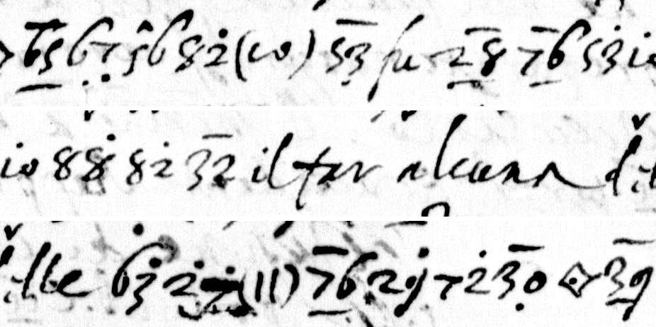
Each box holds one unit of the transcription: the figure, its mark and the list that the mark names, and the word of the table. Italic boxes are clear words of the letter. A word in {braces} has no period gloss: it is a proposal inside its alphabetical window.
Et {in somma}(?) il parere di quasi tutti *fu* che non conveniva a dignità di Papa *il far alcuna delle* cose domandate se non con debito termine, et dopo
And {in short}(?) the opinion of almost all was that it did not befit the dignity of the Pope to do any of the things asked, except in due time, and after
The code gives dictionary forms; number, gender and tense in the reading are ours. In the reading file, *..* marks clear text and (?) a doubt. The figure 10 without a mark has two values in the table, "a" and "Ambasciatore".
How sure
| Measure | Value |
|---|---|
| Test on fr. 4696 (letters of 1586 to 1589 with the clear text above the cipher): units whose word is in the table of 378 values | 463 |
| The gloss on the page is the word of the table | 452 (97.6 %) |
| Word and mark both agree | 408 (88.1 %) |
| The same test with a shuffled table | 2 of 572 |
| Blind test before fr. 4702 was found: code words with a period gloss | 344 of 371 (93 %) |
| Blind test: code words chosen inside an alphabetical window | 42 of 64 (66 %), and 8 near misses in the same window |
| 24 March 1590: code units; with a period gloss; window proposals; not resolved | 584; 509 (87 %); 41; 17 |
Outside check. After the reading, the statements of the two letters of March 1590 were compared with L. von Pastor, History of the Popes, vol. 21, pp. 343-362. Pastor confirms 19 of 22 statements of the first letter and 7 of 11 of the second. For the letter of 21 January the check is the clerk of 1590 himself.
What is not resolved
- No key sheet was found. The cipher is on black-and-white microfilm: one dot against two dots often cannot be decided, and a wrong mark gives a wrong word that looks real. In about one unit in ten the mark that was read names another list.
- 24 March 1590: 17 units are not resolved, and 41 words are proposals. The name of the person who left Rome is a code that is not resolved.
- Four words of the March readings were shaped by what the history says; the reading files mark them.
Editions and readings: editions/edition_1590-01-21_f30.txt, reading/f26v-27r_1590-03-24.md. Folder: gonzaga-1590.